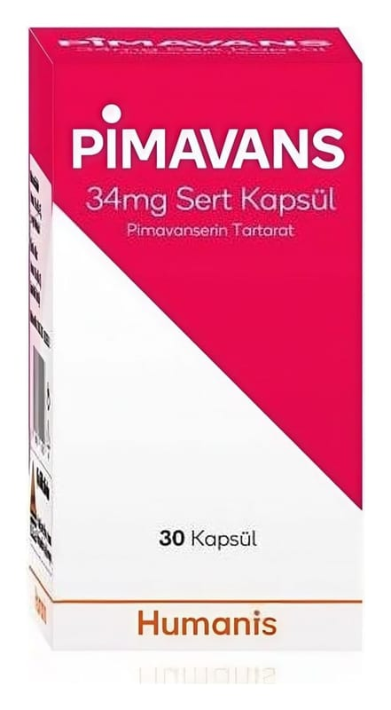

Pimavans 34 mg Sert Kapsül (30 adet)

Ne için kullanılır
KT · Bölüm 1PİMAVANS antipsikotikler grubunda yer alan pimavanserin etkin maddesini içerir ve Parkinson hastalığı psikozu ile ilişkili halüsinasyon ve sanrıların tedavisinde kullanılan bir ilaçtır.
PİMAVANS, demansa bağlı psikozu olan hastaların tedavisi için kullanımı onaylı değildir.
PİMAVANS, 30 kapsül içeren 60 mL HDPE şişe, çocuk emniyet kilitli kapak ile kullanıma sunulmuştur. Opak beyaz gövdeli ve açık yeşil kapsül başlığı olan, beyaz toz içeren sert kapsüldür.
2. PİMAVANS kullanmadan önce dikkat edilmesi gerekenler PİMAVANS’ı aşağıdaki durumlarda KULLANMAYINIZ. Eğer: • Pimavanserine veya bu ilacın içeriğindeki maddelerden herhangi birine alerjiniz varsa, kullanmayınız.
PİMAVANS’ı aşağıdaki durumlarda DİKKATLİ KULLANINIZ Eğer, • Normal gece uykusundayken kısa süreli nefes durması (uyku apnesi olarak ifade edilir) durumu yaşıyorsanız veya yaşadıysanız ve aldığınız ilaçlar normal beyin aktivitelerini yavaşlatıyorsa (depresanlar), • Akciğere kan götüren bir toplardamar veya atardamarda kan pıhtılaşması riski taşıyorsanız (tromboembolik komplikasyon).
Aşağıdaki durumlardan herhangi biri sizin için geçerliyse, pimavanserin tedavisinden önce doktorunuza söyleyiniz: • PİMAVANS kalp elektrosunda uzamaya sebep olabilir. Kalpte ritim bozukluğu öyküsü olan hastalarda ve şikayete sebep olan kalp atış hızında yavaşlama, kanda potasyum veya magnezyum düşüklüğü ve doğuştan kalp rit im bozukluğu olan ve/veya ani ölüm riskini artırabilecek diğer durumlarda PİMAVANS kullanılmamalıdır.
Ayrıca, konvansiyonel ve atipik antipsikotik ilaçlarda olduğu gibi bunamaya bağlı psikozu olan yaşlı hastaların tedavisinde kullanıldığında ölüm riskinde artışa neden olmaktadır.
Bu uyarılar, geçmişteki herhangi bir dönemde dahi olsa sizin için geçerliyse lütfen doktorunuza danışınız.
PİMAVANS’ın yiyecek ve içecek ile kullanılması PİMAVANS yiyeceklerle birlikte veya ayrı olarak alınabilir.
Hamilelik İlacı kullanmadan önce doktorunuza veya eczacınıza danışınız.
Eğer hamile iseniz ya da hamile olmayı planlıyorsanız bu ilacı almadan önce tavsiyeleri için doktorunuza veya eczacınıza danışınız. Eğer hamileliğinizin son üç ayında PİMAVANS kullandıysanız yeni doğanlarda doğumu takiben şiddeti değişebilen titreme, kaslarda gerginlik ve gevşeme, uyku hali, huzursuzluk, solunum sıkıntısı veya beslenme bozuklukları görülebilir. Eğer bebeğinizde bu belirtilerden herhangi biri mevcut ise, doktorunuzla iletişim kurunuz. (Bkz. 4. Olası yan etkiler)
PİMAVANS kesinlikle gerekli olmadıkça gebelik döneminde kullanılmamalıdır. Gebelik sırasında tedavinin bırakılması gerekiyorsa, bu aniden yapılmamalıdır.
Tedaviniz sırasında hamile olduğunuzu fark ederseniz hemen doktorunuza veya eczacınıza danışınız.
Emzirme Pimavanserinin anne sütüne geçişi, bebek üzerine veya süt üretimi üzerindeki etkileri hakkında veriler mevcut değildir. Bu nedenle, eğer bebeğinizi emziriyorsanız PİMAVANS’ı kullanmamalısınız.
İlacı kullanmadan önce doktorunuza veya eczacınıza danışınız.
Araç ve makine kullanımı PİMAVANS’ın sinir sistemine ilişkin potansiyel etkileri nedeniyle araç ve makine kullanma becerileri üzerinde hafif ya da orta derecede etki göstermesinden dolayı hastaların, bireysel duyarlılıkları anlaşılıncaya kadar, araç ve makine kullanmamaları önerilir. Doktorunuzla bu konuda konuşmadan araç ve makine kullanmayınız.
PİMAVANS’ın içeriğinde bulunan bazı yardımcı maddeler hakkında önemli bilgiler PİMAVANS Parlak Mavi FCF – FD&C Mavi 1 yardımcı maddesini içermektedir, bu madde alerjik reaksiyonlara neden olabilir.
Diğer ilaçlarla birlikte kullanımı Bazı ilaçlar PİMAVANS’ın etki etme şeklini etkileyebilir.
PİMAVANS’ın Sınıf 1A antiaritmikler (örn. kinidin, prokainamid) veya Sınıf 3 antiaritmikler (örn, amiodaron, sotalol), bazı antipsikotik ilaçlar (örn. ziprasidon, klorpromazin, tiyoridazin) ve bazı antibiyotikler (örn. gatifloksasin, moksifloksasin) ile birlikte kullanımından kaçınılmalıdır.
PİMAVANS'ın güçlü bir CYP3A4 inhibitörü (örn itrakonazol, ketokonazol, klaritromisin, indinavir) ile eş zamanlı kullanımı pimavanserin maruziyetini artırır; birlikte kullanılmamalıdır. [bkz. Bölüm 3].
PİMAVANS'ın güçlü veya orta dereceli CYP3A4 indükleyicileri ile eş zamanlı kullanımı pimavanserin maruziyetini azaltır. Güçlü (karbamazepin, sarı kantaron, fenitoin, rifampin) veya orta derecede CYP3A4 (modafinil, tiyoridazin, efavirenz, nafsilin) indükleyicilerinin PİMAVANS ile eş zamanlı kullanımından kaçınılmalıdır.
PİMAVANS ile birlikte uygulandığında karbidopa/levodopa dozunun ayarlanmasına gerek yoktur.
Eğer reçeteli ya da reçetesiz herhangi bir ilacı şu anda kullanıyorsanız veya son zamanlarda kullandıysanız lütfen doktorunuza veya hemşirenize bunlar hakkında bilgi veriniz.